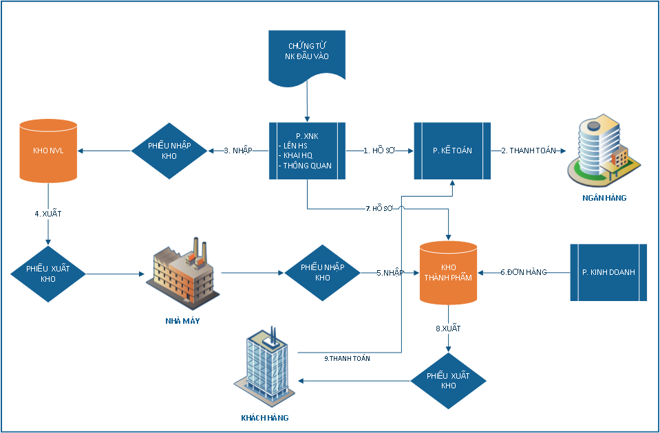
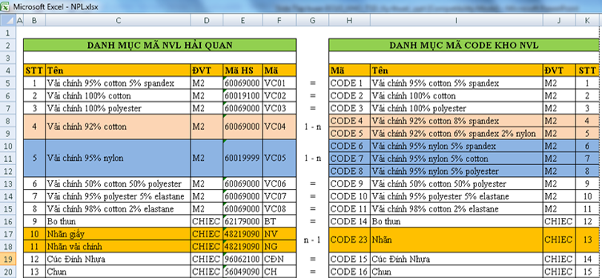
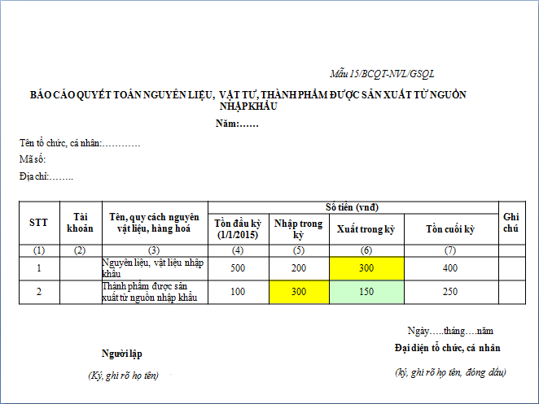
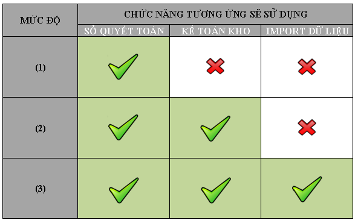
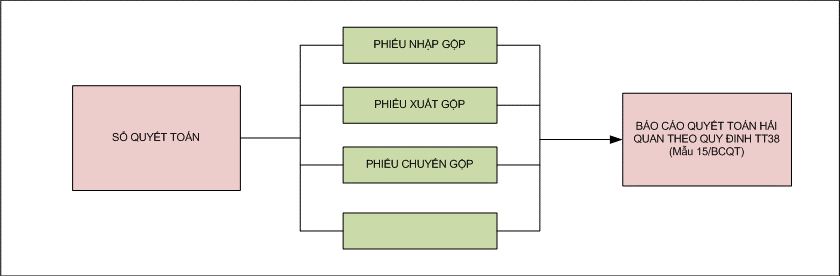
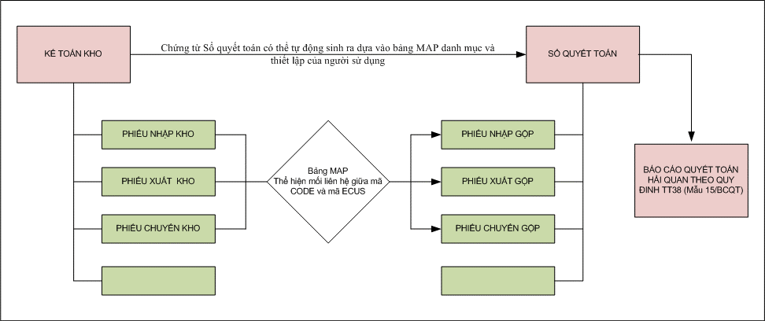
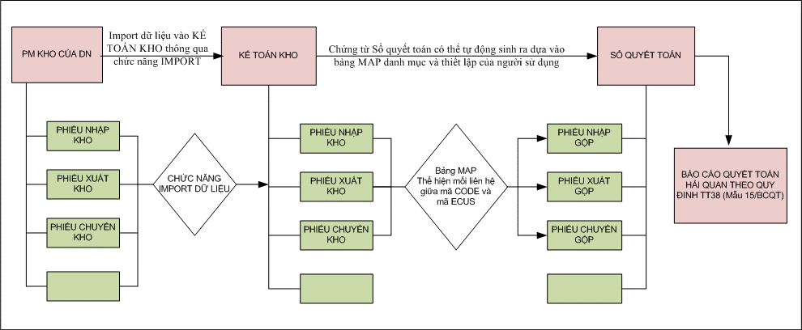
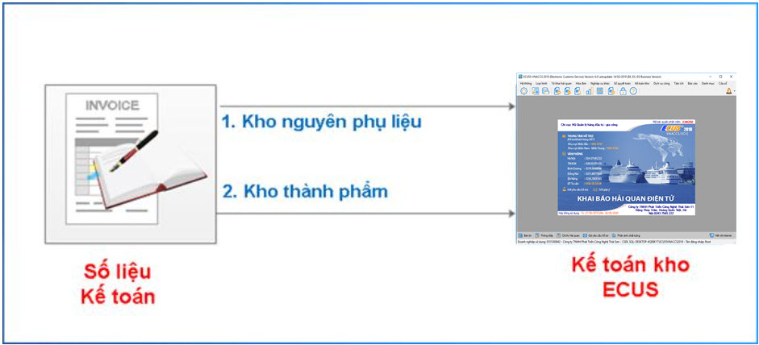
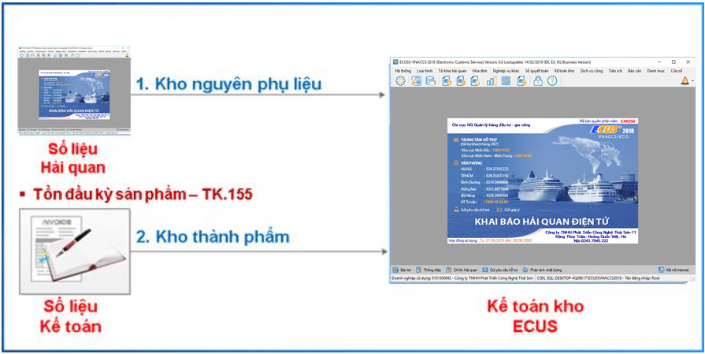

1. Giới thiệu chung.
Căn cứ điều 41 nghị định 08/2015/NĐ-CP về chế độ báo cáo quyết toán, kiểm tra báo cáo quyết toán tình hình sử dụng nguyên liệu, vật tư, máy móc thiết bị.
Căn cứ điều 60 thông tư số 38/2015/TT-BTC quy định về báo cáo quyết toán.
Định kỳ hàng năm, chậm nhất là ngày thứ 90 kể từ ngày kết thúc năm tài chính, người khai hải quan nộp báo cáo quyết toán tình hình sử dụng nguyên liệu, vật tư, máy móc, thiết bị và hàng hoá xuất khẩu trong năm tài chính cho cơ quan hải quan.
Nộp báo cáo quyết toán theo nguyên tắc tổng trị giá nhập - xuất - tồn kho nguyên liệu, vật tư, bán thành phẩm, sản phẩm hoàn chỉnh theo mẫu số 15/BCQT-NVL/GSQL Phụ lục V ban hành kèm Thông tư này cho cơ quan hải quan thông qua Hệ thống. Báo cáo quyết toán phải phù hợp với chứng từ hạch toán kế toán của tổ chức, cá nhân.
Trong đó tại khoản 3 điều 60 quy định rõ trách nhiệm của tổ chức cá nhân thực hiện quyết toán cụ thể như sau :
- Lập và lưu trữ sổ chi tiết nguyên liệu, vật tư nhập khẩu theo các quy định của Bộ Tài chính về chế độ kế toán, kiểm toán, trong đó ghi rõ số tờ khai hàng hóa nhập khẩu nguyên liệu, vật tư.
- Lập và lưu trữ sổ chi tiết sản phẩm xuất kho để xuất khẩu theo các quy định của Bộ Tài chính về chế độ kế toán, kiểm toán, trong đó xác định rõ xuất khẩu theo số hợp đồng, đơn hàng.
- Lập và lưu trữ chứng từ liên quan đến việc xử lý phế liệu, phế phẩm.
Như vậy để đáp ứng yêu cầu quản lý của Thông tư 38/2015/TT-BTC, doanh nghiệp cần phải thực hiện:
- Quản lý kho Nguyên vật liệu và Thành phẩm theo quy định của Bộ tài chính về chế độ kiểm toán, kế toán (gọi là Kế toán kho).
- Liên kết thông tin quản lý kho Nguyên vật liệu, Thành phẩm với số liệu XNK để lập báo cáo quyết toán và kiểm tra đối chiếu.
- Nộp báo cáo quyết toán từ nghiệp vụ quản lý của “Kế toán kho”.
Để thực hiện quyết toán theo Thông tư 38/2015/TT-BTC thì phải có sự kết hợp giữa bộ phận XNK và bộ phận kế toán kho của doanh nghiệp.
Doanh nghiệp phải có quy trình và hệ thống để quản lý thống nhất giữa XNK và kế toán kho.

Trong thực tế danh mục Nguyên phụ liệu, Sản phẩm trong quản lý kho nội bộ của Doanh nghiệp được quản lý chi tiết theo hệ thống mã nội bộ (thường gọi là mã Code).Trong khi đó, Danh mục nguyên phụ liệu, Sản phẩm trên tờ khai xuất nhập khẩu thì được gộp lại (thường là theo mã HS và thuế xuất), sự khác nhau này được thể hiện rõ trong hình ví dụ sau:

Biểu mẫu Trên mẫu báo cáo quyết toán 15/BCQT-NVL/GSQL chỉ thể hiện tên Nguyên vật liệu, Thành phẩm không có chi tiết theo mã (tức là thể hiện theo dạng gộp):

2. Giải pháp từ phần mềm ECUS:
Phần mềm ECUS được tính hợp thêm module “Sổ quyết toán” và “Kế toán kho”:
- "Sổ quyết toán" quản lý theo danh mục NPL/SP KB Hải quan (Gộp theo nhóm – Như hiện tại để khai trên tờ khai)
- "Kế toán kho" quản lý theo NPL/SP Quản lý nội bộ (Tách theo nhóm – Như hiện tại quản lý theo Invoice)
Doanh nghiệp sẽ áp dụng hai module này theo từng mức độ khác nhau theo mô hình quản lý của từng doanh nghiệp, được thể hiện theo sơ đồ sau:

Giải thích sơ đồ :
- Mức độ (1): Quản lý kho theo danh mục nguyên phụ liệu , Sản phẩm gộp giống danh mục Nguyên phụ liệu, Sản phẩm trên tờ khai và gọi là “Sổ quyết toán”. Từ quản lý kho theo “Sổ quyết toán” có thể in ra được báo báo quyết toán theo quy định của thông tư 38/2015/TT-BTC.
Qua đó ta có sơ đồ quy trình cho mức độ này như sau:

- Mức độ (2) – Quản lý kho theo danh mục nguyên phụ liệu, Sản phẩm chi tiết theo mã chi tiết nội bộ của doanh nghiệp, gọi là “Kế toán kho”. Thông thường quản lý kho do kế toán của doanh nghiệp sẽ thực hiện theo mức độ này. Thông qua bảng MAP danh mục giữa mã chi tiết (gọi là mã code) với mã hàng ECUS tương ứng, khi tạo phiếu chứng từ bên chức năng Kế toán kho phần mềm sẽ tự động tạo ra phiếu chứng từ tương ứng cho Sổ quyết toán.
Theo đó ta có sơ đồ quy trình của mức độ này như sau :

- Mức độ (3) – Cho phép kết nối giữa quản lý kho của doanh nghiệp đã có phần mềm quản lý kho với “Kế toán kho” của phần mềm ECUS thông qua chức năng Import dữ liệu chứng từ. Mức độ này sử dụng cho các doanh nghiệp đã có phần mềm quản lý kho chuẩn riêng, chỉ quan tâm đến việc kết chuyển dữ liệu từ phần mềm quản lý kho hiện tại sang “Sổ quyết toán” của phần mềm ECUS để in báo cáo quyết toán theo mẫu 15/BCQT nộp cho cơ quan Hải quan.
Qua đó ta có sơ đồ quy trình của mức độ này như sau :

Từ các sơ đồ mức độ ở trên ta có thể thấy dù mức độ ứng dụng module Quyết toán trên ECUS của Doanh nghiệp ở mức độ nào thì "Sổ quyết toán" là thể hiện của sự kết chuyển số liệu kế toán chi tiết của doanh nghiệp để liêt kết được với số liệu XNK thành một hệ thống dữ liệu thống nhất. Số liệu tổng trên "Sổ quyết toán" luôn bằng với số liệu tổng trên "Kế toán kho".
- Kế toán kho và Sổ quyết toán có các nghiệp vụ như nhau, khác nhau là ở danh mục Nguyên vật liệu, Sản phẩm:
- Sổ quyết toán: quản lý theo danh mục nguyên phụ liệu, Sản phẩm gộp sử dụng khai báo chứng từ tờ khai với Hải quan.
- Kế toán kho: quản lý theo danh mục Nguyên phụ liệu, Sản phẩm chi tiết (thường gọi là mã Code) của nghiệp vụ quản lý kho kế toán.
- Hai phần này liên kết với nhau thông qua bảng MAP giữa danh mục Nguyên phụ liệu, Sản phẩm chi tiết với danh mục Nguyên phụ liệu, Sản phẩm gộp.
- Khi sử dụng “Kế toán kho” thì số liệu sẽ tự động kết chuyển sang “Sổ quyết toán”.
- Nếu doanh nghiệp quản lý kế toán kho theo danh mục Nguyên vật liệu, Sản phẩm gộp giống số liệu Nguyên vật liệu chi tiết thì chỉ cần sử dụng “Sổ quyết toán”.
- Nếu doanh nghiệp quản lý kho theo danh mục Nguyên vật liệu, Sản phẩm chi tiết thì sẽ sử dụng “Kế toán kho” trên ECUS hoặc sử dụng phần mềm kế toán kho sẵn có.
- Nếu doanh nghiệp sử dụng phần mềm kế toán kho riêng thì có thể kết nối dữ liệu sang “Kế toán kho” của ECUS để thực hiện sự liên kết giữa kế toán kho và số liệu XNK đồng thời in được báo cáo quyết toán trên ECUS.
3. Phương án chốt tồn.
Khi bắt đầu thực hiện theo thông tư 38 doanh nghiệp cần thực hiện việc chốt tồn đưa số liệu tồn vào phần mềm ECUS, hiện nay chúng tôi đưa ra hai phương án chốt tồn để doanh nghiệp lựa chọn như sau.
- Phương án 1: Chốt tồn theo số liệu kế toán của doanh nghiệp.
- Tồn đầu kỳ NPL – TK152 & Tồn đầu kỳ Sản phẩm – TK155:
- Doanh nghiệp tự nhập số liệu tồn đầu kỳ Nguyên vật liệu, Vật tư và Sản phẩm dựa vào số liệu từ sổ sách kế toán của doanh nghiệp theo các quy định của bộ Tài chính về chế độ kiểm toán, kế toán lên phần mềm ECUS5-VNACCS.
- Công ty Thái Sơn sẽ có trách nhiệm hướng dẫn và hỗ trợ doanh nghiệp cách cập nhật dữ liệu lên phần mềm theo mẫu báo cáo quyết toán.
- Trách nhiệm của doanh nghiệp:
- DN tự chốt tồn và báo cáo với cơ quan hải quan và tự chịu trách nhiệm về số liệu đã cập nhật lên phần mềm.
- Sơ đồ phương án 1:

- Phương án 2: Chốt tồn nguyên liệu vật tư theo số liệu Hải quan, Sản phẩm theo số liệu kế toán của doanh nghiệp.
- Tồn đầu kỳ NPL – TK152 :
- Dữ liệu sẽ được cập nhật tự động từ phần mềm ECUS5-VNACCS dựa vào số liệu tồn của DN đến thời điểm kết thúc thông tư cũ và chuyển qua thông tư mới (trước ngày 01/04/2015).
- Công ty Thái Sơn sẽ hỗ trợ DN cập nhật tồn đầu kỳ trên PM theo mẫu báo cáo quyết toán dựa vào năm tài chính của DN.
- Tồn đầu kỳ Sản phẩm – TK155:
- Doanh nghiệp tự chốt tồn theo số liệu kế toán doanh nghiệp và Cập nhật vào phần mềm hải quan.
- Trách nhiệm của doanh nghiệp:
- Doanh nghiệp tự chốt tồn và báo cáo với cơ quan hải quan và tự chịu trách nhiệm về số liệu đã cập nhật lên phần mềm.
- Sơ đồ phương án 2:

Bản quyền © thuộc về Công ty TNHH Phát triển công nghệ Thái Sơn